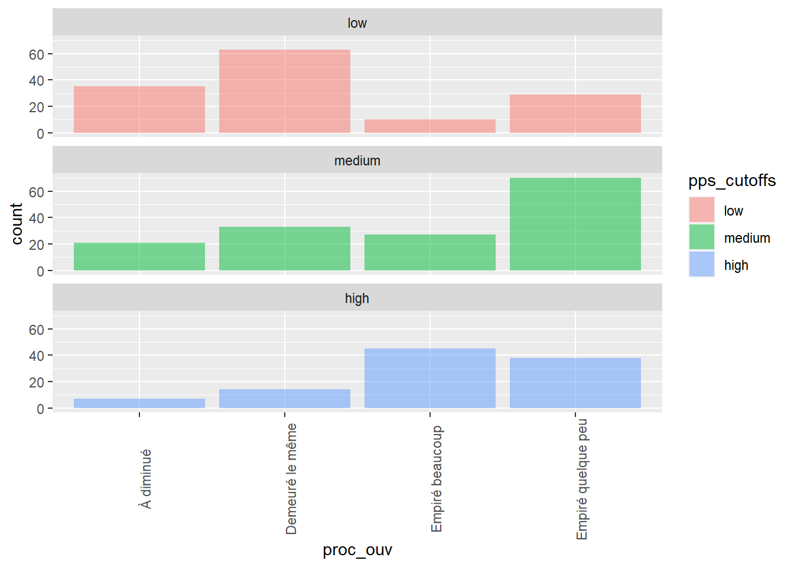

Exploratory analyses on procrastination data using cluster analysis
Cluster analysis
Import data
library(cluster)
library(factoextra)
library(GGally)
library(tidyr)
library(plotly)
library(NbClust)
library(clValid)
library(dendextend)
library(purrr)
library(psych)
library(car)
library(fpc)Preparing data for cluster analysis
# isolate clustering variables
clust_dat <- totscores_mod[ ,c(25:32)]
# Standardize the variables
scaled_dat <- scale(clust_dat)
# Compute the dissimilarity matrix
res.dist <- dist(scaled_dat, method = "euclidean")
dist_matrix <- as.matrix(res.dist)Compare estimation methods
m <- c( "average", "single", "complete", "ward")
names(m) <- c( "average", "single", "complete", "ward")
# function to compute coefficient
ac <- function(x) {
agnes(scaled_dat, method = x)$ac
}
map_dbl(m, ac)## average single complete ward
## 0.7583 0.6176 0.8518 0.9619The analysis shows the superiority of the Ward method in this case.
Determining the optimal number of clusters
res.nbclust <-
NbClust(
scaled_dat,
distance = "euclidean",
min.nc = 2,
max.nc = 9,
method = "complete",
index = "all"
)
## *** : The Hubert index is a graphical method of determining the number of clusters.
## In the plot of Hubert index, we seek a significant knee that corresponds to a
## significant increase of the value of the measure i.e the significant peak in Hubert
## index second differences plot.
## 
## *** : The D index is a graphical method of determining the number of clusters.
## In the plot of D index, we seek a significant knee (the significant peak in Dindex
## second differences plot) that corresponds to a significant increase of the value of
## the measure.
##
## *******************************************************************
## * Among all indices:
## * 10 proposed 2 as the best number of clusters
## * 1 proposed 3 as the best number of clusters
## * 3 proposed 4 as the best number of clusters
## * 7 proposed 6 as the best number of clusters
## * 1 proposed 8 as the best number of clusters
## * 2 proposed 9 as the best number of clusters
##
## ***** Conclusion *****
##
## * According to the majority rule, the best number of clusters is 2
##
##
## *******************************************************************factoextra::fviz_nbclust(res.nbclust) +
theme_minimal() +
ggtitle("NbClust's optimal number of clusters")## Among all indices:
## ===================
## * 2 proposed 0 as the best number of clusters
## * 10 proposed 2 as the best number of clusters
## * 1 proposed 3 as the best number of clusters
## * 3 proposed 4 as the best number of clusters
## * 7 proposed 6 as the best number of clusters
## * 1 proposed 8 as the best number of clusters
## * 2 proposed 9 as the best number of clusters
##
## Conclusion
## =========================
## * According to the majority rule, the best number of clusters is 2 .
Cluster analyses
Kmeans
# Computing Kmeans clustering
set.seed(124)
km.res <- kmeans(res.dist, 2, nstart = 1500)
# Visualizing kmeans clusters
fviz_cluster(
km.res,
data = res.dist,
ellipse.type = "euclid",
star.plot = T,
repel = T,
ggtheme = theme_minimal()
)
K-Medoids
# PAM where nb. of cluster is specified
set.seed(101)
pam.res <- pam(dist_matrix, 2)
# Visualizing PAM clusters
fviz_cluster(
pam.res,
ellipse.type = "t",
repel = T,
ggtheme = theme_classic()
)
Hierarchical Clustering
res.dist <- dist(scaled_dat, method = "euclidean")
# Create hierarchical tree
res.hc <- hclust(d = res.dist, method = "ward.D2")
fviz_dend(
res.hc,
k = 2,
cex = .5,
color_labels_by_k = T,
rect = T)
# Cut the dendrogram into different groups
grp_hc <- cutree(res.hc, k = 2)
fviz_cluster(
list(data = dist_matrix, cluster = grp_hc),
ellipse.type = "convex",
repel = T,
show.clust.cent = F,
ggtheme = theme_minimal()
)
Agglomerative Nesting
res.agnes <- agnes(
x = dist_matrix,
stand = T,
method = "ward"
)
fviz_dend(res.agnes, cez = .6, k = 2)
# Cut the dendrogram into different groups
grp_agnes <- cutree(res.agnes, k = 2)
fviz_cluster(
list(data = dist_matrix, cluster = grp_agnes),
ellipse.type = "convex",
repel = T,
show.clust.cent = F,
ggtheme = theme_minimal()
)
Divisive Analysis Clustering

grp_res.diana <- cutree(res.diana, k = 2)
fviz_cluster(
list(data = dist_matrix, cluster = grp_res.diana),
ellipse.type = "convex",
repel = T,
show.clust.cent = F,
ggtheme = theme_minimal())
# Create a group variable based on clustering
totscores_mod$cluster_res.diana <- grp_res.diana
# Save the variable
save(totscores_mod, file = "totscores_w_cluster.Rda")Hierarchical K-Means Clustering
res.hk <- hkmeans(dist_matrix, 2)
# Visualize the hkmeans final clusters
fviz_cluster(
res.hk,
cex = .6,
palette = "jco",
repel = T,
ggtheme = theme_classic()
)
# Visualize the tree
fviz_dend(res.hk, cex = 0.6, palette = "jco",
rect = TRUE, rect_border = "jco", rect_fill = TRUE)
# Create a group variable based on clustering
grp_res.hk <- res.hk$cluster
totscores_mod$cluster_res.hk <- grp_res.hk
# Save the grouping variable
save(totscores_mod, file = "totscores_w_cluster.Rda")
Exploratory comparisons between clusters
Create factor variables from cluster variables and “proc_ouvert” variable
totscores_mod <- totscores_mod %>%
mutate(cluster_res.hk = factor(cluster_res.hk,
labels = c("1", "2"))) %>%
mutate(cluster_res.diana = factor(cluster_res.diana,
labels = c("1", "2"))) %>%
mutate(proc_ouv = factor(proc_ouvert,
labels = c("À diminué",
"Demeuré le même",
"Empiré beaucoup",
"Empiré quelque peu")))
Visualize differences based on clustering variable
totscores_mod %>%
ggplot(aes(proc_ouv, fill = cluster_res.hk)) +
geom_histogram(stat = "count", binwidth = .5, alpha = .5) +
facet_wrap(~cluster_res.hk, ncol = 1) +
theme(axis.text.x = element_text(angle = 90)) +
theme_bw()
totscores_mod %>%
ggplot(aes(proc_ouv, fill = cluster_res.diana)) +
geom_histogram(stat = "count", binwidth = .5, alpha = .5) +
facet_wrap(~cluster_res.diana, ncol = 1) +
theme(axis.text.x = element_text(angle = 90)) +
theme_bw()
totscores_mod %>%
ggplot(aes(pps_tot, fill = cluster_res.hk)) +
geom_histogram(binwidth = .5, alpha = .5) +
facet_wrap(~cluster_res.hk, ncol = 1) +
theme(axis.text.x = element_text(angle = 90)) +
theme_bw()
totscores_mod %>%
ggplot(aes(pps_tot, fill = cluster_res.diana)) +
geom_histogram(binwidth = .5, alpha = .5) +
facet_wrap(~cluster_res.diana, ncol = 1) +
theme(axis.text.x = element_text(angle = 90)) +
theme_bw()
Exploratory analyses : mean differences
Import library
sum_stats <- totscores_mod %>%
group_by(cluster_res.hk) %>%
get_summary_stats(type = "mean_sd")
sum_stats %>%
select(-n) %>%
print(n = 24)## # A tibble: 22 x 4
## cluster_res.hk variable mean sd
## <fct> <chr> <dbl> <dbl>
## 1 1 age 22.5 6.62
## 2 1 cmb_enfant 0.545 0.858
## 3 1 ese_tot 17.4 5.56
## 4 1 gses_tot 27.8 5.40
## 5 1 mpfi_tot 41.4 9.06
## 6 1 pps_tot 37.0 9.46
## 7 1 qmes_eng_opt 5.12 0.921
## 8 1 qmes_sous_eng_scol 4.91 1.54
## 9 1 qmes_sur_eng_scol 3.70 1.60
## 10 1 qpr_pp 43.1 14.3
## 11 1 qpr_rhs 25.6 5.76
## 12 2 age 23.8 6.37
## 13 2 cmb_enfant 0.848 1.12
## 14 2 ese_tot 25.9 5.67
## 15 2 gses_tot 32.5 4.29
## 16 2 mpfi_tot 51.1 8.13
## 17 2 pps_tot 30.2 10.5
## 18 2 qmes_eng_opt 6.61 0.723
## 19 2 qmes_sous_eng_scol 2.88 1.37
## 20 2 qmes_sur_eng_scol 4.87 1.33
## 21 2 qpr_pp 45.7 12.0
## 22 2 qpr_rhs 29.8 3.94